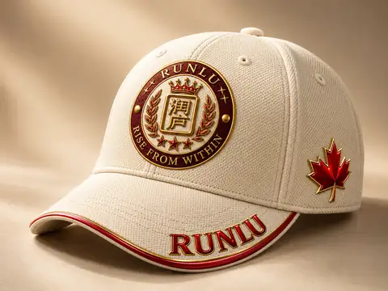

01 · MADE OBJECT
RUNLU Signature Cap
An everyday object carrying the RUNLU mark.
A finished cream cap with burgundy-and-gold detailing, a red maple leaf, and the RUNLU crest. This is a real small-batch object, shown here without added promotional labels or bilingual artwork.
Cream · Burgundy · Gold · Maple red